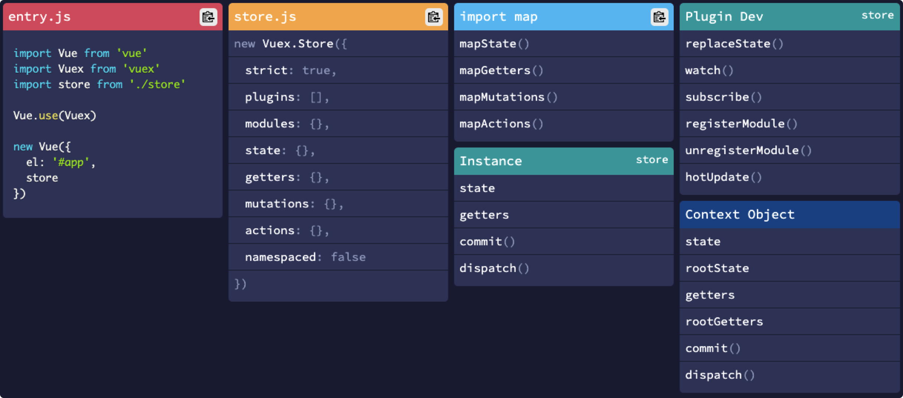
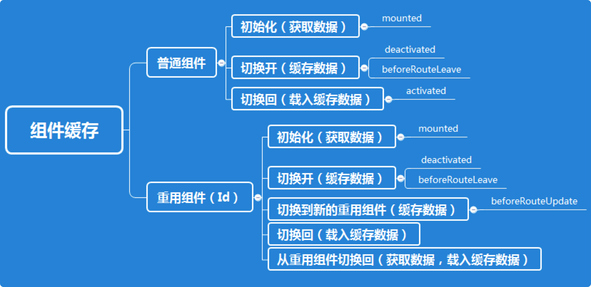

缓存技术学习与实践：前端与后端

目录
Caching has an important role to play in a system design. It is primarily used to speed up information retrieval from a service and reduce the load on a database engine, the primary source of truth for a service. Data that is frequently requested by users are stored in a in-memory key-value store, like Redis, to speed up subsequent look up of the same data.
前端数据管理
前端数据管理涉及到以下几个方面内容：
- 数据缓存
- 数据共享
- 数据操作模式
- 数据结构转换
以Vue前端开发为例，可以采用的技术选型流程，请参考下图：
重要思路：以Vuex为中心，基于SuperVue，模拟后端数据管理模式
Vuex

Why should you use Vuex?
- The data must be accessible by multiple (independent) components
- Centralized API / data fetching logic
Vuex 的内脏由五部分组成：State、Getter、Mutation、Action 和 Module。在实际应用中，这五个部分并不是必须的，你需要用到什么就添加什么。但是一般再怎么简单的 Vuex，也至少会由 State 和 Mutation 构成。
State
- 由于 Vuex 的状态存储是响应式的，从 store 实例中读取状态最简单的方法就是在计算属性中返回某个状态；
- 需要注意的是，如果你把
store.state.count放在 data 中，store.state.count的变化是不会主动触发界面刷新的，当然，也不能直接这样：<div>｛｛store.state.count ｝｝</div>，因为在模板中是无法直接访问到 store 对象的，所以这样写无疑会报错。 - 通过在根实例中注册 store 选项，该 store 实例会注入到根组件下的所有子组件中，且子组件能通过 this.$store 访问到。
- 使用 Vuex 并不意味着你需要将所有的状态放入 Vuex。虽然将所有的状态放到 Vuex 会使状态变化更显式和易调试，但也会使代码变得冗长和不直观。如果有些状态严格属于单个组件，最好还是作为组件的局部状态。你应该根据你的应用开发需要进行权衡和确定。
- 涉及到module重用的情况是，采用与 vue data的函数定义方式一致的形式，可以避免state污染
Getter
- Getter 接受 state 作为其第一个参数
- Getter 还也可以接收 getters 作为第二个参数
- Getter 还会将 store.getters 对象暴露出去，你可以以属性的形式访问这些值
- Getter 返回一个函数，就可以传参了
- Use getters to compute derived values of the state
Mutation
- 更改 Vuex 的 store 中的状态的唯一方法是提交 mutation。
- Vuex 中的 mutation 非常类似于事件：每个 mutation 都有一个字符串的 事件类型 (TYPE) 和 一个 回调函数 (handler)。这个回调函数就是我们实际进行状态更改的地方，并且它会接受 state 作为第一个参数
- 我们不能直接 store.mutations.TYPE() 来调用，Vuex 规定必须使用 store.commit(‘TYPE’)来触发对应 type 的方法
- 可以向 store.commit 传入额外的参数（payload），大多数情况下，这个payload 是一个对象，调用方式如下（推荐第二种方式）
// 1、把载荷和type分开提交
store.commit('increment', {
amount: 10
})
// 2、整个对象都作为载荷传给 mutation 函数
store.commit({
type: 'increment',
amount: 10
})
- 动态添加state的属性（例如，在已有的state.student对象中，动态添加一个属性 age）
mutations: {
addAge (state) {
Vue.set(state.student, 'age', 18)
// 或者：
// state.student = { ...state.student, age: 18 }
}
}
- 统一定义 commit 的type值（适用于对于多人合作的大项目）
// mutation-types.js
export const SOME_MUTATION = 'SOME_MUTATION'
// store.js
import Vuex from 'vuex'
import { SOME_MUTATION } from './mutation-types'
const store = new Vuex.Store({
state: { ... },
mutations: {
// 使用 ES2015 风格的计算属性命名功能来使用一个常量作为函数名
[SOME_MUTATION] (state) {
// mutate state
}
}
})
Action
- Action 提交的是 mutation，而不是直接变更状态。
- Action 可以包含任意异步操作。
- Action 函数接受一个
context参数，它与 store 实例有着相同的方法和属性，但是他们并不是同一个实例 - 可以使用
context.commit来提交一个 mutation，或者通过context.state和context.getters来获取 state 和 getters，通过context.dispatch调用其他action。（可以采用参数解析方法，进行调用，如下）
actions: {
increment ({ commit, state, getters, dispatch }) {
commit('increment')
}
}
- Action 通过 store.dispatch 方法触发，调用方法如下（推荐第二种方式）
// 以载荷形式分发
store.dispatch('incrementAsync', {
amount: 10
})
// 以对象形式分发
store.dispatch({
type: 'incrementAsync',
amount: 10
})
辅助函数
- mapState (四种方式)
import { mapState } from 'vuex'
export default {
// ...
computed: mapState({
// 映射 this.a 为 store.state.a
[ 'a', 'b', 'c' ],
// 箭头函数可使代码更简练
a: state => state.a,
b: state => state.b,
c: state => state.c,
// 传字符串参数 'b'
// 等同于 `state => state.b`
bAlias: 'b',
// 为了能够使用 `this` 获取局部状态
// 必须使用常规函数
cInfo (state) {
return state.c + this.info
}
})
}
-
mapGetters，调用方式与
mapState基本上没啥区别 -
mapMutations，调用方式如下
import { mapMutations } from 'vuex'
export default {
// ...
methods: {
...mapMutations([
// 将 `this.increment()` 映射为
// `this.$store.commit('increment')`
'increment',
// `mapMutations` 也支持载荷：
// 将 `this.incrementBy(amount)` 映射为
// `this.$store.commit('incrementBy', amount)`
'incrementBy'
]),
...mapMutations({
// 将 `this.add()` 映射为
// `this.$store.commit('increment')`
add: 'increment'
})
}
}
- mapActions，和 mapMutations 用法一模一样
Module
Vuex 允许我们将 store 分割成大大小小的对象，每个对象也都拥有自己的 state、getter、mutation、action，这个对象我们把它叫做 module（模块），在模块中还可以继续嵌套子模块。
- moduleA.js（子模块）
export default {
state: {
text: 'moduleA'
},
getters: {},
mutations: {},
actions: {}
}
- store.js（主模块）
import moduleA from './module/moduleA';
import moduleB from './module/moduleB';
export default new Vuex.Store({
modules: {
moduleA, moduleB,
},
// ...
}
- 模块内部的 state 是局部的，只属于模块本身所有，所以外部必须通过对应的模块名进行访问
computed: {
...mapState({
name: state => state.moduleA.text
}),
},
- 访问根节点
export default {
// ...
getters: {
// 注意:rootState必须是第三个参数
detail(state, getters, rootState, rootGetters) {
return state.text + '-' + rootState.name;
}
},
actions: {
callAction({state, rootState, rootGetters}) {
alert(state.text + '-' + rootState.name);
}
}
}
- 模块内部的 action、mutation 和 getter 默认是注册在全局命名空间的，这样使得多个模块能够对同一 mutation 或 action 作出响应。通过添加
namespaced: true的方式使子模块成为带命名空间的模块。当模块被注册后，它的所有 getter、action 及 mutation 都会自动根据模块注册的路径调整命名。 - 如果一个模块启用了命名空间，那么它里面的 getter 和 action 中收到的 getter，dispatch 和 commit 也都是局部化的，不需要在同一模块内额外添加空间名前缀。也就是说，更改
namespaced属性后不需要修改模块内的任何代码。 - 如果想要在全局命名空间内分发 action 或提交 mutation 的话，那么我们只需要将 将
{ root: true }作为第三参数传给 dispatch 或 commit 即可
export default {
namespaced: true,
// ...
actions: {
callAction({state, commit, rootState}) {
commit('setName', '改变', {root: true});
alert(state.text + '-' + rootState.name);
}
}
}
- 辅助函数绑定带命名空间的模块
# 方法一
computed: {
...mapState('some/nested/module', {
a: state => state.a,
b: state => state.b
})
},
methods: {
...mapActions('some/nested/module', [
'foo', // -> this.foo()
'bar' // -> this.bar()
])
}
# 方法二
import { createNamespacedHelpers } from 'vuex'
const { mapState, mapActions } = createNamespacedHelpers('some/nested/module')
export default {
computed: {
// 在 `some/nested/module` 中查找
...mapState({
a: state => state.a,
b: state => state.b
})
},
methods: {
// 在 `some/nested/module` 中查找
...mapActions([
'foo',
'bar'
])
}
}
大型VUE程序的Vuex管理
- 管理初始状态
const initialState = () => ({
variable1: value,
variable2: value,
variable3: value
});
const state = initialState();
// Getters
// Mutations
const mutations = {
RESET(state) {
const newState = initialState();
Object.keys(newState).forEach(key => {
state[key] = newState[key]
});
},
// other mutations
}
// Actions
const actions = {
reset({ commit }) {
commit('RESET');
},
}
- 自动导入模块
store/
├── index.js ---> Main Store file
└── modules/
├── index.js --> Auto exporter
├── module1.store.js
└── module2.store.js
/**
* Automatically imports all the modules and exports as a single module object
*/
const requireModule = require.context('.', false, /\.store\.js$/);
const modules = {};
requireModule.keys().forEach(filename => {
// create the module name from fileName
// remove the store.js extension and capitalize
const moduleName = filename
.replace(/(\.\/|\.store\.js)/g, '')
.replace(/^\w/, c => c.toUpperCase())
modules[moduleName] = requireModule(filename).default || requireModule(filename);
});
export default modules;
import Vue from 'vue'
import Vuex from 'vuex'
// import the auto exporter
import modules from './modules';
Vue.use(Vuex);
export default new Vuex.Store({
modules, // all your modules automatically imported :)
})
Pinia
If you feel the need to use a global state management solution in your application but think Vuex is too heavy for your use case, you might want to look at Pinia. Pinia is an extremely lightweight but capable Vuex alternative. Pinia started as an experiment to redesign what a Store for Vue could look like with the Composition API around November 2019. Since then, the initial principles are still the same, but Pinia works for both Vue 2 and Vue 3 and doesn’t require you to use the composition API. 由于Pinea是轻量级的，体积很小，它适合于中小型应用。它也适用于低复杂度的Vue.js项目，因为一些调试功能，如时间旅行和编辑仍然不被支持。将 Vuex 用于中小型 Vue.js 项目是过度的，因为它重量级的，对性能降低有很大影响。因此，Vuex 适用于大规模、高复杂度的 Vue.js 项目
SWRV
If you want to cache server-side data and fetch data in another fashion, you can consider to make use of the SWRV cache pattern or Apollo. swrv uses the Stale-While-Revalidate cache pattern to ensure the user sees data as soon as possible and revalidates the data in the background, anytime a component requests fresh data.
<template>
<div>
<div v-if="error">failed to load</div>
<div v-if="!data">loading...</div>
<div v-else>hello {{ data.name }}</div>
</div>
</template>
<script>
import useSwr from 'swrv';
export default {
name: 'Profile',
setup() {
const { data, error } = useSwr('/api/user', fetcher);
return {
data,
error,
};
},
};
</script>
Normalizr
The important rule is to keep your global state tree flat. This means that you should not have nested entities like article data with the corresponding author information as nested objects in your state.
缓存生命周期
想要缓存VUE组件数据，首选是使用自带的keep-alive组件，使用了该组件后，被该组件包裹的组件数据都会被缓存，组件仅会在初始加载时触发一次mounted及其之前的所有生命周期，而之后则会在activated 和 deactivated这两种事件状态切换，对这样的组件来说重点是在什么时机进行数据重置，一般会把数据获取更新方法放在activated事件中。
keep-alive有一个不方便的地方是，它的缓存是由VUE自动管理的，在需要的时候无法主动对缓存进行清除（在网上搜索过一些方法，主要是推荐用v-if进行组件重载，但测试后发现数据还是存在，而设置includes属性不够灵活）。
在开发项目的过程中发现，当组件是重用的公共组件时，keep-alive就无法满足使用场景了，因为当在不同ID的重用组件间切换时，甚至连activated 和 deactivated这两种事件都不会触发，而仅仅是路由发生了变化，这时候组件的数据就无法响应这种变化，无论怎么切换都只会保持初始的数据，因此需要新的缓存策略。
参考Vue Router文档的说明，在这种情况下，需要使用beforeRouteUpdate钩子来处理数据，基本策略如下图：

SuperVue
强大而简易的VUEX操作库，它帮助用户在使用vuex时，省去了繁琐的vuex结构定义等复杂繁琐的内容。使用super-vuex，只需定义好数据结构，剩下的一切它会自动帮你生成，它会给你提供简易的数据操作接口，使用方便，简化了使用vuex过程中繁琐的步骤。操作起来非常方便，不需要手动去定义module、mutation、state、getter和action，定义好数据结构后，通过数据驱动直接自动生成，并提供了调用方式简单的API接口功使用者使用。
Vuex 常用开发包
- 抽取繁重的action数据处理任务到web worker
- 基于vuex和keep-alive实现页面缓存
- 缓存action，防止重复连续调用
- vue-cache
- 基于 vuex的分页处理
- 基于 vuex 的加载效果处理
- 基于 vuex 的通知
后端缓存管理
Ristretto
Ristretto is a fast, concurrent cache library built with a focus on performance and correctness. I came across many embedded key-value store like groupcache, fastcache, burrow cache and Dgraph’s Ristretto. Groupcache is an excellent distributed embedded caching library meant to replace a pool of independent Redis or Memcache nodes. Mailgun’s enhancement to groupcache adds explicit key removal, key expiry and many more helpful features. I’d like to write an article about groupcache in the future, but for now I’ll settle for Ristretto.
Ristretto is a high performance, concurrent, memory-bound Go cache. It is contention-proof, scales well and provides consistently high hit-ratios. It is really easy to use with very good documentation and a detailed blog post about it’s architecture and benchmarks.
参考文献
- https://guuu.io/2020/data-fetching-vue-composition-api/
- https://bigdata.bihell.com/language/javascript/vue/vuex.html#state
- https://markus.oberlehner.net/blog/application-state-management-with-vue-3/#use-the-swr-cache-pattern
- https://dev.to/localeai/architecting-vuex-store-for-large-scale-vue-js-applications-4f1f
- https://zendev.com/2018/05/21/vuex-perfect-interface-frontend-backend.html
- https://logaretm.com/blog/2019-12-21-vuex-off-mainthread
- https://cevio.github.io/super-vuex/
- https://dgraph.io/blog/post/introducing-ristretto-high-perf-go-cache/
- https://github.com/dgraph-io/ristretto
- https://ayada.dev/posts/using-ristretto-to-cache-objects/
- https://studygolang.com/articles/25283
- https://webdevstation.com/posts/ristretto-the-most-performant-concurrent-cache-library-for-go/
- https://gist.github.com/zemirco/49e6bebd8f281bce349136931d939cad
- https://zhuanlan.zhihu.com/p/398693305
- https://www.mailgun.com/blog/golangs-superior-cache-solution-memcached-redis/
- https://github.com/eko/gocache
- https://vincent.composieux.fr/article/i-wrote-gocache-a-complete-and-extensible-go-cache-library